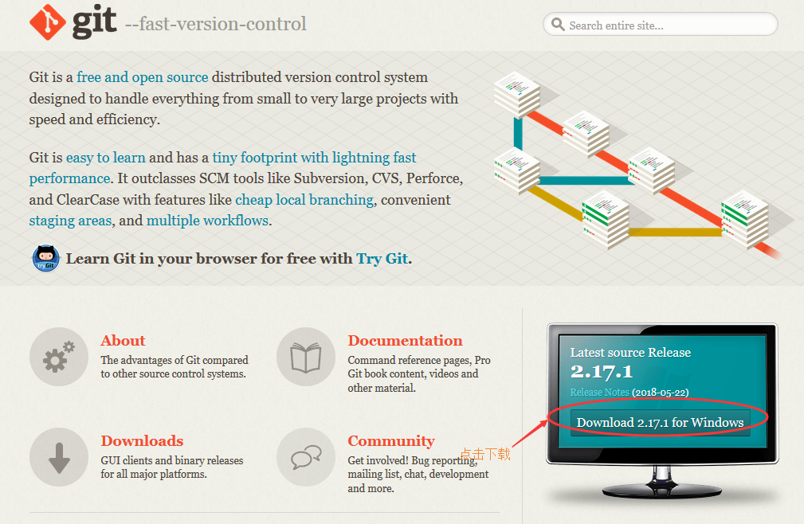
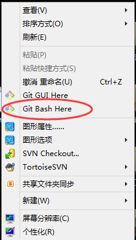
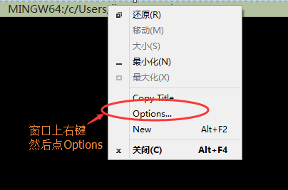
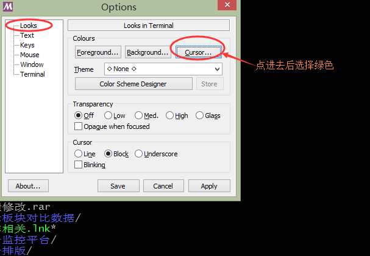
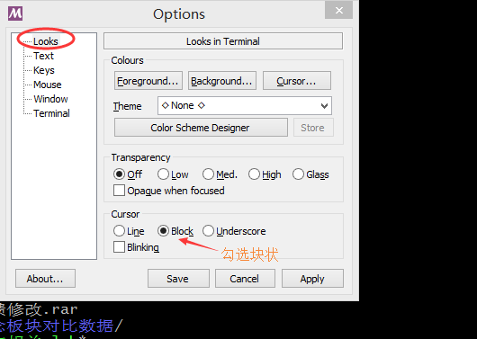
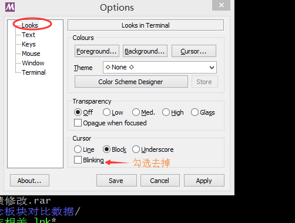
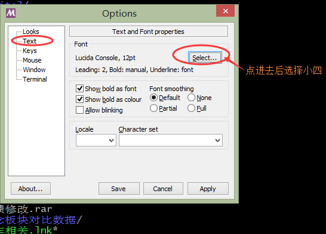
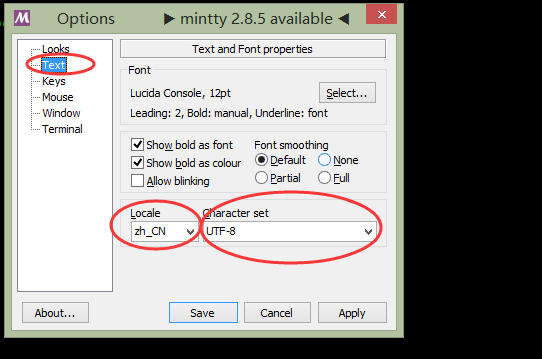

第一步：浏览器上输入https://git-scm.com/进入git官网下载安装包

第二步：双击安装包安装一路next就好
第三步：启动git bash命令行窗口
在你要操作的文件夹的空白地方点击鼠标右键再点Git Bash Here

第四步：修改git bash命令行窗口的显示效果为比较舒服的显示效果

光标颜色从白色改为绿色

光标形状从下划线改为块状

光标改为不闪烁

字体大小改为12号字

第五步：修改git bash命令行窗口可以输入中文
